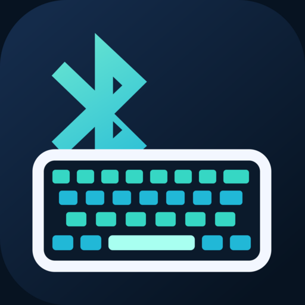
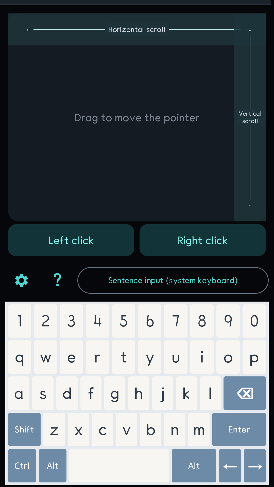
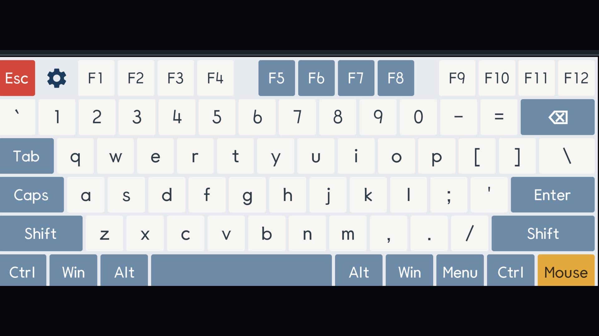
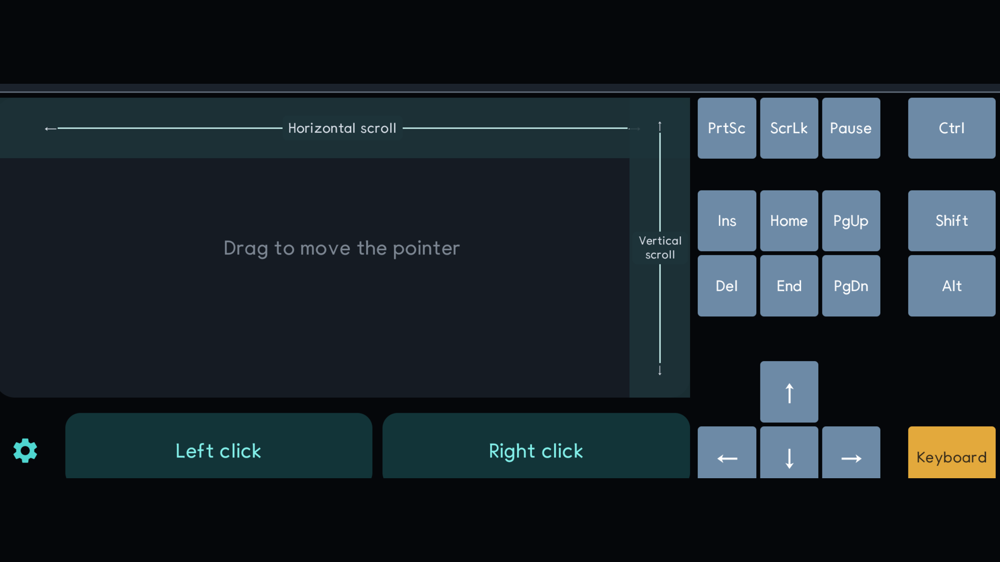
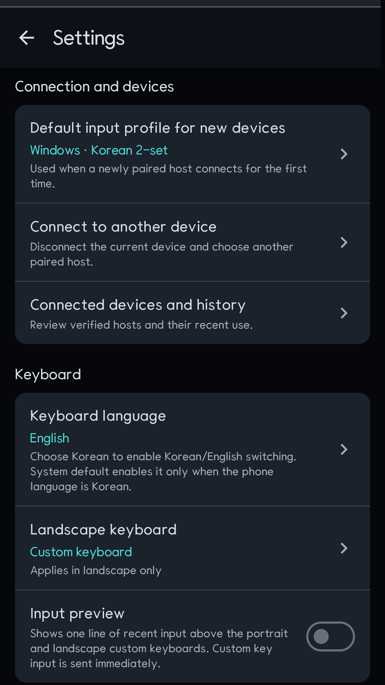

Short answer. A standard Bluetooth HID keyboard cannot send the Unicode
syllable 한. It sends physical key usages. To type Korean, the phone has to
decompose the syllable into ㅎ + ㅏ + ㄴ, map those jamo to the Korean 2-set
keys g + k + s, and let the host's Korean IME compose the result.

Dotori Bluetooth KeyboardPairs an Android phone as a standard Bluetooth keyboard and mouse, so the PC, tablet, or TV needs no companion program.
This distinction matters when a phone is being used as a real Bluetooth keyboard rather than as a remote-control app. A remote app can send text through its own protocol. A HID keyboard has only the keys described by its report descriptor, and the host decides what those keys mean.
Bluetooth HID sends keys, not finished text
A keyboard report contains modifier bits and key usages such as A, G, Enter, or Left Shift. There is no general-purpose “insert this Unicode string” field. English text appears simple only because a US keyboard layout maps those usages directly to familiar letters.
Hangul syllables require another step. Modern Korean syllables are decomposed into an initial consonant, vowel, and optional final consonant. Compound vowels and final consonants expand into more than one 2-set keystroke. The host's Korean IME then recomposes that key sequence.
한 → ㅎ + ㅏ + ㄴ → g + k + s
과 → ㄱ + ㅘ → r + h + kThe host layout and the phone profile must agree
Before sending a sentence, make the two ends agree on three things:
- The host has a Korean 2-set input method installed.
- The active input mode is Korean when Korean jamo keystrokes arrive.
- The phone uses the matching host profile instead of a US-only profile.
A useful calibration is to send a known probe such as 가나다 before relying on a
long sentence. If the host prints Latin letters, the connection works but the host is still
in English mode. If the result is different Korean text, the active layout does not match the
phone's mapping.
What to check when the result is wrong
| What appears | Likely cause | What to do |
|---|---|---|
gks instead of 한 | The host is in English mode | Switch the host to Korean, then resend the probe |
| Unexpected Korean characters | The host layout and phone profile differ | Select Korean 2-set on both ends |
| No characters | No focused text field, disconnected HID session, or unsupported phone profile | Focus a text field and check the Bluetooth HID connection |
| Some special keys differ | Host-specific keyboard behavior | Use the Windows, iOS, or Android TV profile that matches the host |
The keyboard and trackpad screens
The same HID connection carries keyboard reports and mouse reports. The portrait screen keeps a trackpad above the keyboard; landscape separates the keyboard and trackpad into focused layouts. Settings hold the host profile, pointer sensitivity, and input calibration.




The compatibility boundary
The Android phone itself must expose the Bluetooth HID Device profile. The receiving device must accept a standard Bluetooth keyboard, and host behavior still controls language switching, special keys, and horizontal scrolling. Bluetooth HID is also mostly one-way: the phone cannot read the text field and silently correct a wrong host layout, so a visible probe is more honest than guessing.
Dotori Bluetooth Keyboard provides Korean 2-set input, sentence input, host profiles, calibration, and a trackpad over one Bluetooth HID connection. More about Dotori Bluetooth Keyboard